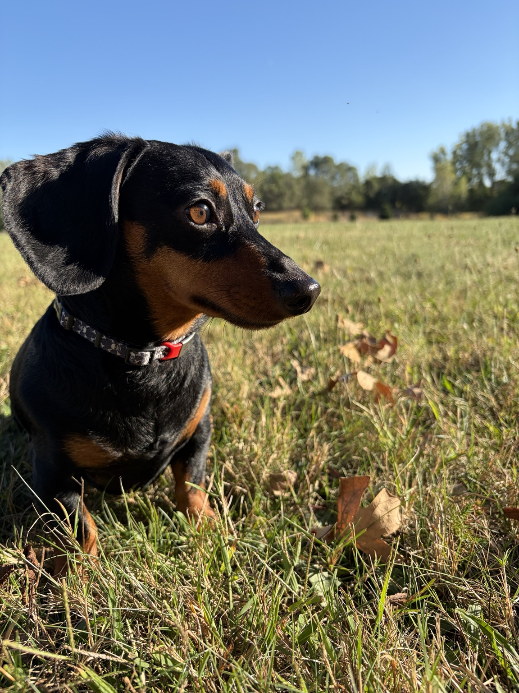

IT Operations
I have experience working in IT operations, where I have been able to build on my interest in support, security, and practical technology problem solving.
CK
Hi, I'm Carson Kahila, an Information Science student at Michigan State University interested in IT, data security, AI integration, and solving practical technology problems.

I am studying Information Science at Michigan State University and pursuing a career in IT and data security. I am especially interested in security, AI integration, technology policy, and the problem-solving side of IT support.
I like work that combines technical knowledge with practical results. Whether I am troubleshooting an issue, learning a new platform, or building something from scratch, I enjoy understanding how systems work and finding ways to make them more useful and reliable.
Outside of technology, I enjoy hockey, spending time outdoors, music, video games, and carpentry. Those interests give me a mix of competitive, creative, and hands-on experiences that I bring into the way I approach technical problems.
I have experience working in IT operations, where I have been able to build on my interest in support, security, and practical technology problem solving.
–
Working as a carpenter gave me experience with hands-on problem solving, attention to detail, teamwork, and turning plans into finished results. Those skills continue to influence how I approach technical work.
I created an AI agent that extracts text and unit information from project documents containing billable units. The goal was to make it easier to gather information needed for job takeoffs.
I built a playable UNO card game in Python early in my college experience. The project helped me become more comfortable breaking a larger problem into smaller pieces and translating game rules into code.
If you would like to connect, you can reach me by email or visit my LinkedIn profile.
Email: kahilaca@msu.edu
LinkedIn: Carson Kahila on LinkedIn